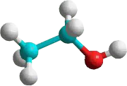

H H
| |
H–C–C–O–H
| |
H H
Синонимы: винный спирт, метилкарбинол, этанол
Внешний вид: бесцветн. жидкость
Формула в виде текста: C2H5OH
Молекулярная масса = 46,069 а.е.м.
Температура плавления = -114,15 °C
Температура кипения = 78,39 °C
Температура кипения азеотропа (вода 4%, этиловый спирт 96%) = 78,174 °C
Порог восприятия запаха в воздухе = 0,25 мг/л
Плотность = 0,7893 г/см3 (20 °C)
Показатель преломления (для D-линии натрия) = 1,3611 (20 °C)
Показатель диссоциации: pKa (1) = 18 (20 °C, вода)
Стандартная энтальпия образования ΔH = 234,8 кДж/моль (298 К)
Стандартная энтропия образования S = 281,38 Дж/моль·K (298 К)
Стандартная мольная теплоемкость Cp = 1,197 Дж/моль·K (298 К)
Энтальпия плавления ΔHпл = 4,81 кДж/моль
Энтальпия кипения ΔHкип = 839,3 кДж/моль
Температура вспышки в воздухе = 13 °C
Температура самовоспламенения на воздухе = 404 °C
Летальная доза = 9000 мг/кг (ЛД50, крысы, перорально)